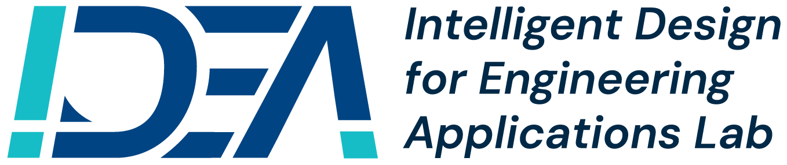

RESEARCH DIRECTIONS
From Ideas to Design Solutions.
Loading research focus…

Our lab’s broader vision connects knowledge-driven and physics-guided AI to engineering design. The directions above describe my current research interests and are open to refinement.